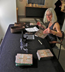
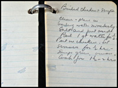

BOOKS OF ESTHER
An interdisciplinary exhibition of the life of one woman who "talked" through writing was on view At the Oregon Jewish Museum, 1953 NW Kearney Street, Portland, September 12, 2012 - November 25, 2012.
Click on each image to view a larger version.
|  |  |
{kind=link}
{kind=link}
Willa Schneberg's mother, a first generation American, was a survivor of larynx cancer, and wrote what she would normally speak. Willa utilizes ceramic sculpture, photographs, audio clips and personal objects to reveal how memory, language, Jewish identity, work, disability and aging, shape a life. Schneberg has created the echo of the voice no longer there, the shape of the hand that held the pen. This exhibition is about the artifacts of our lives, and how we infuse them with meaning. "The Books of Esther" also embodies the essential contribution of written language, and how one woman's need to communicate trumped her disability.
A letterpress chapbook of poems about her mother was available in conjunction with the exhibit.
In Oregon Jewish Life there is an article about The Books of Esther entitled "A Jewish Mother's Voice.".
Willa was interviewed by Ed Kraus on the September 30th "Yiddish Hour," KBOO community radio, Portland, about "The Books of Esther". Click here to listen to the interview (right-click to download).
Watch a short video of "Books of Esther" exhibit at the Portland Jewish Museum.
If you are interested in "The Books of Esther" traveling to your museum, gallery or synagogue contact us or call 503.248.4136.